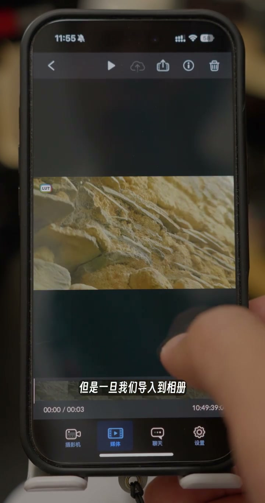
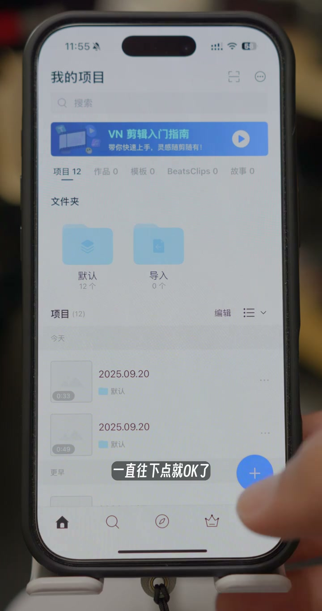
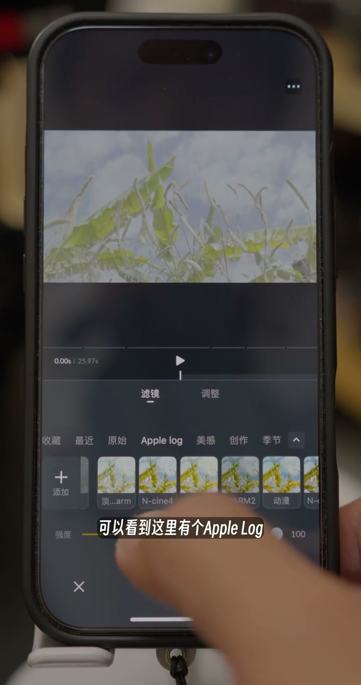
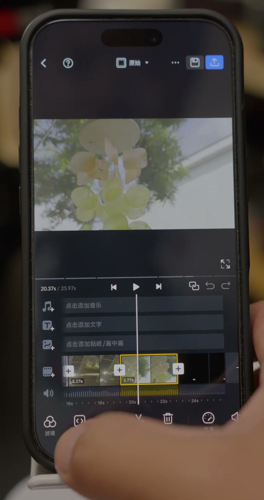

01
中文
大家可能都知道会用 Blackmagic Camera 这个APP来做视频的拍摄。
EN
You may all know about using Blackmagic Camera for shooting video.
表达提示Blackmagic Camera（拍摄APP）

Scene English · 剪辑 · iPhone调色APP
iPhone Video Color-Grading App Recommendations
🎧 语音讲解
Opening: introducing handy video color-gra…
情境灰片素材需要第三方 APP 调色。
大家可能都知道会用 Blackmagic Camera 这个APP来做视频的拍摄。
You may all know about using Blackmagic Camera for shooting video.
表达提示Blackmagic Camera（拍摄APP）
在拍摄的时候忘记选择那个 LUT 烧录。
Often we forget to choose the LUT burn-in when shooting.
表达提示LUT burn-in（LUT烧录）
在预览的时候他是可以加载上这个调色预设，但一旦我们导入到相册，他又是灰片的一个格式。
It can load the grading preset in preview, but once imported to the album, it's a flat gray format.
表达提示flat gray format（灰片格式）
Blackmagic Camera（拍摄APP
LUT burn-in（LUT烧录

VN Video Editor: the first grading app to …
情境VN 是移动端好用的免费剪辑调色工具。
今天首先要讲的第一个就是 VN Video Editor 这个APP。
The first app today is VN Video Editor.
表达提示VN Video Editor（剪辑APP）
如果你是第一次使用，你就一直顺着他的那个问答一直往下点就OK了。
If it's your first time, just keep following the prompts.
表达提示follow the prompts（顺着引导）
VN Video Editor（剪辑APP
follow the prompts（顺着引导

Applying Apple Log presets: pick clips rec…
情境VN 的滤镜面板支持 Apple Log 一键调色。
可以看到这里有个 Apple Log，我导入了一些调色 LUT，可以针对 Apple Log 进行快速的一个调色。
Here's Apple Log, plus some LUTs I imported, for fast Apple Log grading.
表达提示Apple Log（灰片规格）
比如说这个画面用动漫风，就可以非常好看。
For this clip the anime style looks really good.
表达提示anime style（动漫风）
Apple Log（灰片规格
anime style（动漫风

Fine-tuning: even night clips grade fast. …
情境LUT 基础上还能精确微调。
这边有个调整，你可以针对目前这个 LUT 去调整一下它的曝光。
There's an Adjust panel to tweak exposure on the current LUT.
表达提示Adjust panel（调整面板）
包括它的饱和度降低提高，然后色温啥的。
You can raise or lower saturation, and tweak white balance.
表达提示saturation（饱和度）
针对具体某个颜色的色相饱和度调整都是可以做到的。
Per-color hue and saturation adjustments are all possible.
表达提示per-color（针对单色）
Adjust panel（调整面板
saturation（饱和度

Importing LUTs: in Filters tap Add, choose…
情境LUT 导入流程完整演示。
还是一样在滤镜这里点添加，然后选择从文件添加。
Again under Filters, tap Add then choose From Files.
表达提示Add from files（从文件添加）
点开这里找到这里的 LUT 选项，然后比如说我随便选一个，选这个人像晨调。
Open this folder, find the LUT option, and pick one like portrait morning tone.
表达提示portrait tone（人像晨调）
这里你可以新建文件夹，我就放在 Apple Log 这个文件夹里。
You can create a new folder—I put it in the Apple Log folder.
表达提示create a folder（新建文件夹）
Add from files（从文件添加
portrait tone（人像晨调

Ending: that wraps up the VN Video Editor …
情境预告下期内容。
以上就是关于 VN Video Editor 的一个导入的教学，包括一个简单的使用教学。
That's the VN Video Editor import and basic usage tutorial.
表达提示tutorial（教学）
Resolve Fusion 应该算是在移动端比较专业的APP，虽然它是付费的，我个人比较推荐。
Resolve Fusion is a fairly professional mobile app—paid, but I personally recommend it.
表达提示professional app（专业APP）
tutorial（教学
professional app（专业APP
说灰片来源
说VN的操作
说LUT微调
说导入LUT
忘选LUT烧录会得到灰片，需要第三方APP补救。
相册无法加载LUT，必须用第三方APP。
LUT基础上还能逐项微调参数。
LUT要放在明确目录，导入时从文件添加。